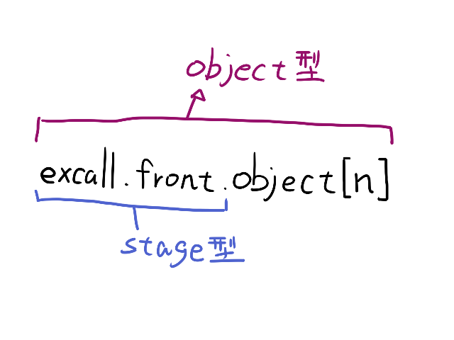

スクリプトマニュアル ＞ 基本構文 ＞ 型
型
型
Siglus では、「型」の概念が非常に重要になります。
全ての式やエレメントは、必ず「型」を持ちます。
例えば、100 と言った整数や a[0] と言った整数を扱うフラグは、「int 型」という型になります。
"abc" や s[0] と言った文字列は「str 型」になります。
| 型 | 型の意味 | 例 |
| void | なし | print など、戻り値を持たないコマンド |
| int | 整数 | 100, -5, a[0], g[0], l[0]
3 + 5 などの式
mouse.get_x など、整数を返すコマンド |
| intlist | 整数の配列 | a, g, l |
| str | 文字列 | "abc", あいうえお, s[0], m[0], k[0]
get_title など、文字列を返すコマンド |
| strlist | 文字列の配列 | s, m, k |
| stage | ステージ | front, back |
| object | オブジェクト | front.object[0] |
| ... | | |
型の一覧については エレメント一覧 を参照して下さい。

|